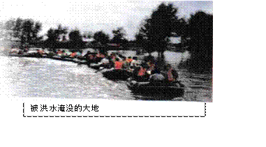
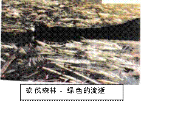
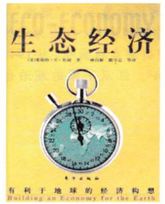
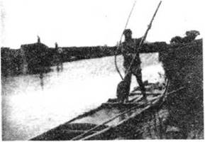
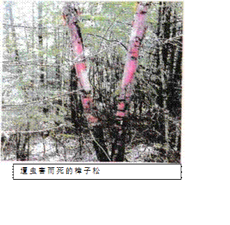
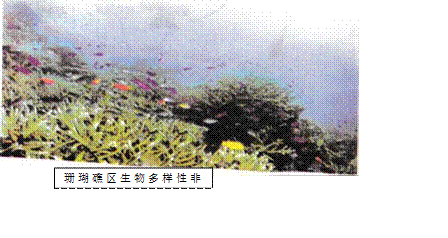
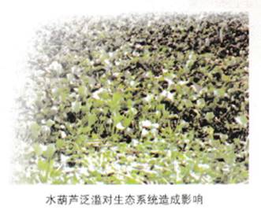
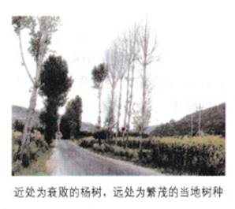

4.1生态工程的基本原理
生态工程建设的目的就是遵循自然界物质循环的规律， 充分发挥资源的生产潜力，防止环境污染，达到经济效益和生态效益的同步发展。与传统的工程相比，生态工程是一类少消耗、多效益、可持续的工程体系。
关注生态工程建设
为什么要进行生态工程建设呢？让我们首先来分析传统经济模式带来的一些问题。
资料分析
资料1
1998年夏季，长江流域经历了自1954年以来的最大洪灾。加上其他地区水灾，1998年全国受灾人数上亿，近500万所房屋倒塌，2 000多万公顷的土地被淹，直接经济损失达1 600多亿元人民币。
是什么原因导致长江洪水泛滥？一些调查数据提供了答案的线索：长江两岸大约有4亿人口居住，工农业生产及生活需要大量的木材，导致对森林的过量采伐；人多地少的严峻局面，导致大量林地开垦成农田，结果使长江上游森林覆盖率从上世纪50年代中期的22%；减少到90年代的4.4%。森林的砍伐导致长江每年因水土流失而带入的土壤达24 × 108t，年复一年的泥沙淤积，使部分河床高出地面，成为继黄河之后的又一条 “悬河”，其浑黄程度有时甚至可以和黄河相“媲美”；另 一方面，长江中游有重大蓄洪作用的湖泊，也因为人为的围湖造田在迅速萎缩，例如，洞庭湖水域面积从1994年的4 350 km2缩减到2 145 km2，江汉平原的湖泊也从10 000多个减少到 300个左右。
资料2
我国是农业大国，人均土地、水等资源占有量远低于世界平均水平。虽然我国用占世界10%的耕地养活了占世界 21%的人口，但由于受到西方“石油农业”模式的影响，加上人口压力以及缺乏生态环境意识，所造成的资源破坏和农业环境污染，已经对社会的可持续发展造成了很大障碍。仅以化肥用量为例，2000年，全国耕地面积约为108hm2，平均化肥施用量是318.8kg/hm2，其中仅山东、河南和江苏三省的平均用量就达564.8 kg/hm2，占全国总用量的30%左右。过量施用农药和化肥，会由于相当一部分不能被作物充分利用，而通过各种途径对土壤、水体和食物造成污染。又如，现代工厂化的饲养方法，使得畜、禽的排泄物，往往不能及时地、按照规定的土地负荷量返回田间，从而造成存放地的污染或者污水所流入水域的富营养化。
小知识
“石油农业”是指大量使用化肥、农药、机械的农业生产方式。 由于需要大量的石油、煤、天然气等作为原料或动力而得名。

生态工程所遵循的基本原理
生态工程是人类学习自然生态系统“智慧”的结晶，是生态学、工程学、系统学、经济学等学科交叉而产生的新兴学科。它遵循的基本原理如下。
物质循环再生原理
地球以有限的空间和资源，长久维持着众多生物的生存、繁衍和发展，奥秘就在于物质能够在各类生态系统中，进行区域小循环和全球地质大循环，循环往复，分层分级利用，从而达到取之不尽、用之不竭的效果。而没有物质循环的系统，就会产生废弃物，造成环境污染，并最终影响到系统的稳定和发展。
“无废弃物农业”是我国古代传统农业的辉煌成就之一，也是生态工程最早和最生动的一种模式（图5 - 1)。要知道，土壤的肥力是一切农业生产特别是种植业的基础，当今大多数国家的土壤肥力，都严重地依赖于化学肥料，而在古代是根本没有化肥投入的。那么，我们的祖先靠什么维持了土壤肥力几千年，使它没有被所供养的亿万民众所耗竭呢？这个问题的答案被一位美国土壤学家在1910年前后找到了。他通过对当时中国农业的实地考察，写成《四千年的农民》一书。他认为其中的诀窍在于中国农民几千年来实施的是一种“无废弃物农业”，即通过枳极种植能够固氮的豆科作物，以及收集一切可能的有机物质，包括人畜粪便、枯枝落叶、残羹剩饭、河泥（图 5 - 2)、炕土、老墙土以及农产品加工过程中的废弃物等，采用堆肥和沤肥等多种方式，把它们转变为有机肥料，施用到农田中，改善了土壤结构；培育了土壤微生物；实现了土壤养分如氮、磷、钾及微量元素的循环利用。
物种多样性原理
一般而言，物种繁多而复杂的生态系统具有较高的抵抗力稳定性。农业和林业生产为追求最大产量，常常忽略生物多样性而连年种植单一品种，这往往会造成病虫害增加，环境恶化。
资料分析
我国的“三北防护林”， 虽然取得了巨大的生态和经济效益，但由于没有完全按照自然生态规律办事，也产生了不少问题。例如，在辽宁西部的章古台地区，最初进行林带建设时，单一种植了大片的樟子松林，由于没有一条昆虫与天地相生相克的食物链，使得偶然滋生的松毛虫肆虐一时，很多地方的樟子松因此奄奄一息，甚至成了鸟兽无踪影的“不毛之地”。同样的原因，前几年仅一种小小的杨树天牛就将宁夏、内蒙古等地几十亿株杨树毁于一旦。
又如，由珊瑚虫和某些藻类共生组成的珊瑚礁区，生物多样性非常高。在澳洲的大堡礁内，仅目前记录的鱼类就有约1 100种，还有超过300种的造礁珊瑚，以及无数已被命名或尚待发现的海洋无脊椎动物和藻类。不同生物在珊瑚礁区占据不同的位置，他们通过食物链关系相互依存，使得珊瑚礁能够在养分稀少的深海中，保持着很高的生物多样性。
生物多样性程度高，可以为各类生物的生存提供多种机会和条件。众多的生物通过食物链关系互相依存，就可以在有限的资源条件下，产生或容纳更多的生物量，提高系统生产力。即使某个物种由于某种原因而死亡，也会很快有其他物种占据它原来的生态位置，从而避免了系统结构或功能的失衡。
协调与平衡原理
在进行生态工程建设时，生物与环境的协调与平衡也是需要考虑的问题之一。
资料分析
江苏、上海和浙江三省交界的太湖养育了江浙百万生灵，号称“包孕吴越”。近年来，由于周边城市、工业和农田的排水中氮、磷的浓度较高，促使太湖水体中水葫芦和藻类疯长。它们不但耗竭了水中溶解的氧，而且植物体死亡后，分解过程中产生的大量生物性毒素，给水生生态系统造成极大的危害，使水体不再适宜鱼虾等生物的生活，甚至成为“死水体”，并影响到人类的健康。

又如，我国西北一些地区年降雨量小于450mm，是只适宜种植灌木和草的地区，但却被硬性规定种植属于乔木的杨树，以致到处都是“杨家将”。生态的不适应使许多地方的杨树长成半死不活的“小老头”状，远不如当地树种那样有较高的生态适应性，结果防护林成了残败的“灰色长城”。
传统经济模式正在毁坏水、大气、土壤和生物资源，消耗地球赠给我们的自然资本。为了实现可持续发展，经济发展必须符合生态学规律，改变“人类能征服自然”的错误观念，走生态经济之路。生态经济主要是通过实行“循环经济”的原则，使一个系统产出的污染物，能够成为本系统或者另一个系统的生产原料，从而实现废弃物的资源化，而实现循环经济最重要的手段之一就是生态工程。
美国著名经济学家L.R.布朗在其新著《生态经济》中说： “经济赤字是我们彼此之间的借贷，而生态赤字却是我们透支于子孙后代”（Economic deficits are what we borrow from each other; ecological deficits are what we take from future generations.）；“生态学家与经济学家之间的关系，应当犹如建筑师与制造商之间的关系，理应由生态学家给经济发展提供蓝图……经济学家和生态学家携起手来就可以构建出一种可持续发展的经济——生态经济。”
小知识
L. R.布朗说，生态经济就是“能够满足我们的需求而又不会危及子孙后代满足其需要”的经济。要做到这一点，我们的经济—定要遵循生态学的基本原理，如果违背这个原理，就一定会由盛转衰，终致崩溃。